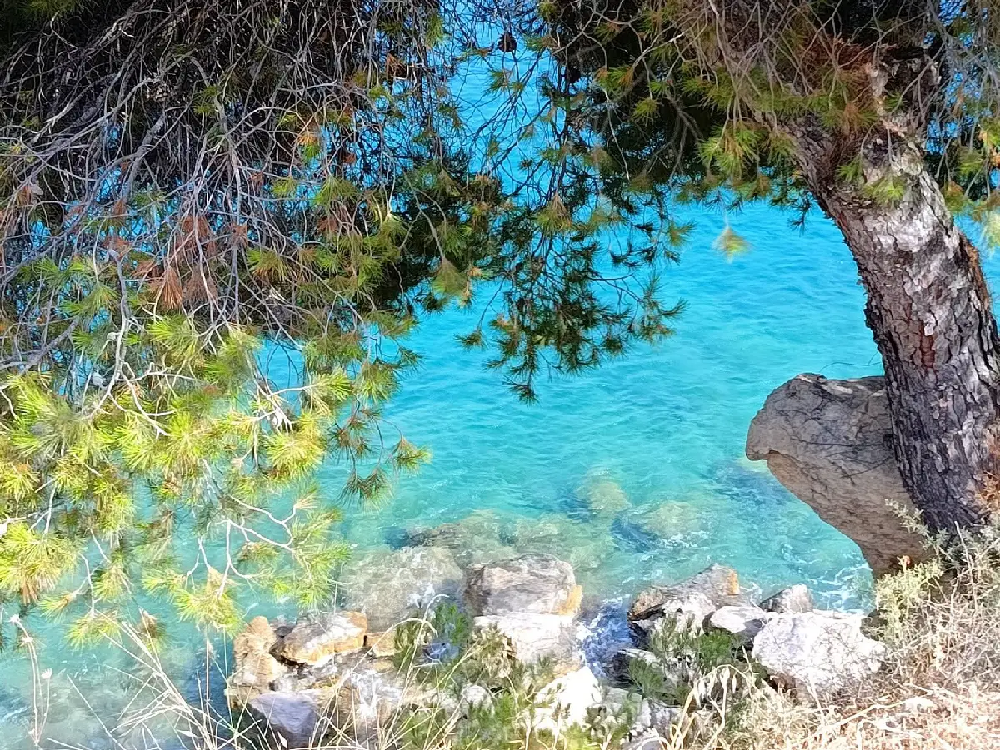
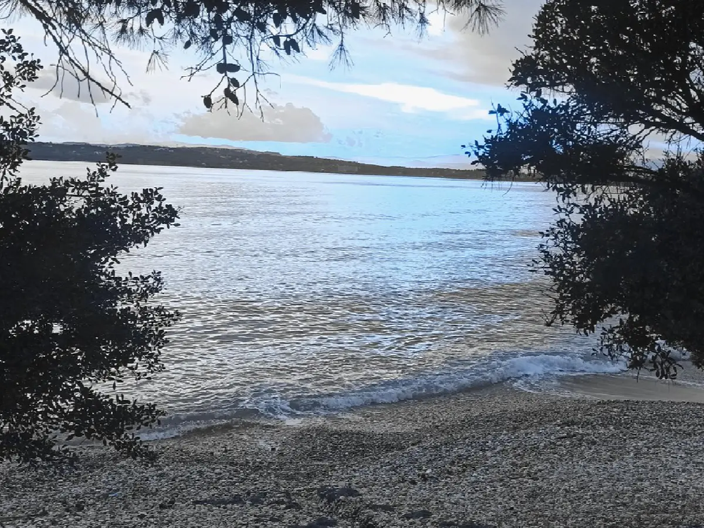

La région
Petrothalassa — un authentique petit village de pêcheurs
Des eaux turquoise cristallines, du sable fin et doré, ainsi qu’une campagne luxuriante et sereine au sud-est de la région historique de l’Argolide, sur la péninsule du Péloponnèse

Petrothalassa · Ermionida
Une destination pittoresque et typiquement grecque
Petrothalassa est située près d’Ermioni — à seulement 6 km —, au sud-est de la région historique de l’Argolide, sur la péninsule du Péloponnèse, en Grèce continentale.
La Maison Vert Amande et Petrothalassa forment ensemble une destination pittoresque et typiquement grecque — charmante, accueillante et réputée pour ses eaux turquoise cristallines et son sable fin et doré.
La plage
Beauté naturelle, calme et tranquillité
Les guides touristiques fournissent très peu d’informations sur Petrothalassa — mais ceux qui la découvrent la décrivent comme « un authentique petit village de pêcheurs », et la plage est réputée pour sa beauté naturelle.
Malgré sa popularité, la plage de Petrothalassa parvient à conserver une atmosphère paisible et détendue, ce qui en fait un choix idéal pour ceux qui recherchent une escapade tranquille, au cœur d’une campagne luxuriante et sereine.

Ermioni, à 6 km
Tout ce dont vous avez besoin, à deux pas
- Trois distributeurs automatiques de billets
- Un kinésithérapeute
- Des agences immobilières
- Des coiffeurs
- Trois pharmacies
- Un office de tourisme
- Des billets de ferry pour les îles voisines
- Des taxis et des bus
- Des cafés, des bars et des tavernes
- Des médecins et des dentistes
- Des agences de location de voitures
- Des magasins et des supermarchés
Les jeudis matin
Le marché fermier hebdomadaire
Tous les jeudis matin, de 7 h 30 à 13 h 30, Ermioni accueille un marché fermier haut en couleur proposant une sélection de fruits frais, de poissons et de légumes locaux, ainsi que divers fruits, du miel artisanal, du vin et de l’huile d’olive, des fleurs, un choix de vêtements, de chaussures, d’objets artisanaux et d’articles ménagers… et bien plus encore.